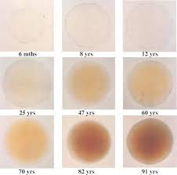

Challanges¶
Here we list some of the challanges to the method of silent substitution and suggest how they can be dealt with.
Prereceptoral filtering¶
Light passes through the ocular media before it strikes the retina
Macular pigment density¶
The macula lutea
[12]:
from pysilsub.precep import get_macula_pigment_density_spectra
mpd = get_macula_pigment_density_spectra()
mpd.plot(ylabel='Macula pigment density')
[12]:
<AxesSubplot:xlabel='Wavelength', ylabel='Macula pigment density'>
Lens density¶
The crystalline lens in the human eye yellows with age due to absorption of short wavelength light.
[11]:
from pysilsub.precep import get_lens_density_spectra
ld = get_lens_density_spectra()
ld.plot(ylabel='Lens density')
[11]:
<AxesSubplot:xlabel='Wavelength', ylabel='Lens density'>
[10]:
mpd
[10]:
Wavelength
390.0 0.04533
391.0 0.04918
392.0 0.05304
393.0 0.05693
394.0 0.06087
...
826.0 0.00000
827.0 0.00000
828.0 0.00000
829.0 0.00000
830.0 0.00000
Name: Density, Length: 441, dtype: float64
Retinal inhomogeneity¶
macular pigment filters light seen by fovea, effectively shifting the spectral sensetivity of photoreceptors in this region
occlude central portion of stimulus to exclude this part of the retina from stimulation
penumbral cones in the shadow of retinal blood vessels
silence (contrast penalty) or ignore
Individual differences¶
The cone fundamentals used to model photoreceptor responses are based on a ‘standard observer’, but in reality the spectral sensetivites are affected by:
spatial variation in macular pigment - this can alter stimulus properties
effect of age on cone fundamentals
Device uncertainty¶
instrumental drift, non-linearities
failures of additvity (have we seen this in the red primaries of STLAB?)
stability over time, within and between sessions
See supplementary info from Spitschan 2017 PNAS for more info - ‘spectrum seeking to improve stimulus control’
calibrate, characterize, simulate
thermal effects of LEDs
Rod intrusion¶
silence or ignore
rod saturation threshold:
3.0 log\(_{10}\) sc td - Adelson, 1982
3.3 - 3.7 log\(_{10}\) sc td - Aguiller and Stiles, 1954
[ ]: